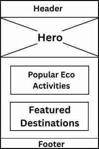
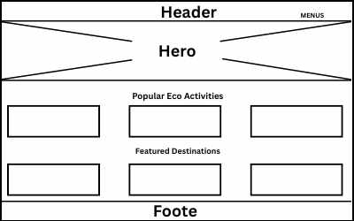

Site Name
EcoVenture
This name captures the essence of eco-friendly adventure and responsible travel. It reflects a commitment to both sustainability and exploration.
Optional domain availability: ecoventure.travel or ecoventureadventures.com
Site Purpose
The purpose of EcoVenture is to educate, inspire, and guide travelers towards sustainable travel practices. It offers resources, destination highlights, eco-tour listings, and a platform for community engagement centered around responsible tourism and environmental awareness.
Scenarios
- What are the best eco-friendly travel destinations for first-time sustainable travelers?
- Where can I find tours or adventures that contribute to local conservation projects?
Color Scheme
- Forest Green (#2E8B57): Used for headers and key accents throughout the site to represent nature and sustainability.
- Earth Beige (#F5F5DC): Used as the background for a clean, earthy feel that enhances readability.
Forest Green Sample
Earth Beige Sample
Typography
- Heading Font: "Merriweather" – Used for all major headings to provide a natural, elegant look.
- Body Font: "Open Sans" – Used for paragraphs and general text for clarity and readability.
Wireframes
Mobile View
Desktop View
Testing
- HTML Validation – Passed using W3C validator
- Accessibility – Checked with WAVE tool (good contrast and proper semantic structure)
- Performance – Optimized images and clean CSS
- Color Contrast – Verified with WebAIM color contrast checker
- SEO – Page title, meta description, and heading hierarchy implemented